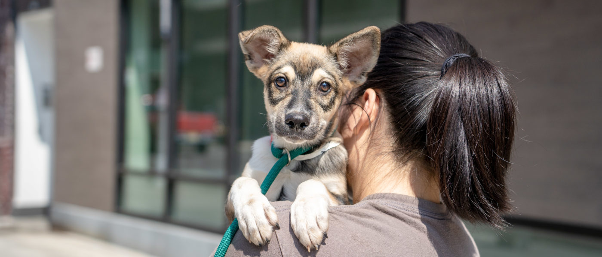

Dog Quotes
“Outside of a dog, a book is a man’s best friend. Inside of a dog it’s too dark to read.” – Groucho Marx

Dog Quotes
“My fashion philosophy is, if you’re not covered in dog hair, your life is empty.” – Elayne Boosler

Dog Quotes
“No one appreciates the very special genius of your conversation as the dog does.” – Christopher Morley

Dog Quotes
“Anybody who doesn’t know what soap tastes like never washed a dog.” – Franklin P. Jones

Dog Quotes
“I don’t understand people who don’t touch their pets. Their cat or dog is called a pet for a reason.” – Jarod Kintz